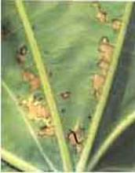

| Home |
| CASTOR |
mAJOR DISEASES |
| 1. Seedling blight |
| 2. Rust |
| 3. Leaf blight |
| 4. Brown leaf spot |
| 5. Powdery mildew |
| 6. Stem rot |
| 7. Bacterial leaf spot |
| 8. Wilt |
| Questions |
| Download Notes |
CASTOR :: MAJOR DISEASE :: BACTERIAL LEAF SPOT
Bacterial leaf spot - Xanthomonas campestris pv. ricinicola
Symptoms
The pathogen attacks cotyledons, leaves and veins and produces few to numerous small round, water-soaked spots which later become angular and dark brown to jet black in color. The spots are generally aggregated towards the tip. At a later stage the spots become irregular in shape particularly when they coalesce and areas around such spots turn pale-brown and brittle. Bacterial ooze is observed on both the sides of the leaf which is in the form of small shining beads or fine scales.
|  |
| Pustules on lower leaf surface |
Management
- Field sanitation help in minimizing the yield loss as pathogen survives on seed and plant debris.
- Hot water treatment of seed at 58˚C to 60˚C for ten minutes.
- Grow tolerant varieties.
- Spray Copper oxychloride 2kg/ha or Streptocycline 100g/ha or Paushamycin 250g/ha.